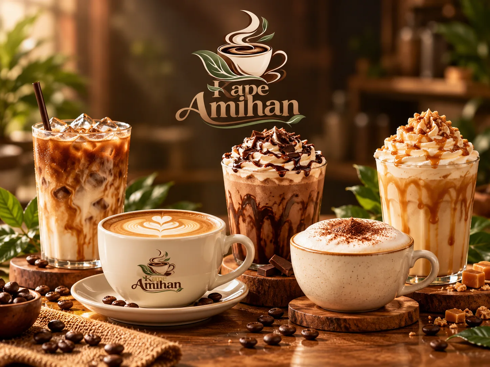
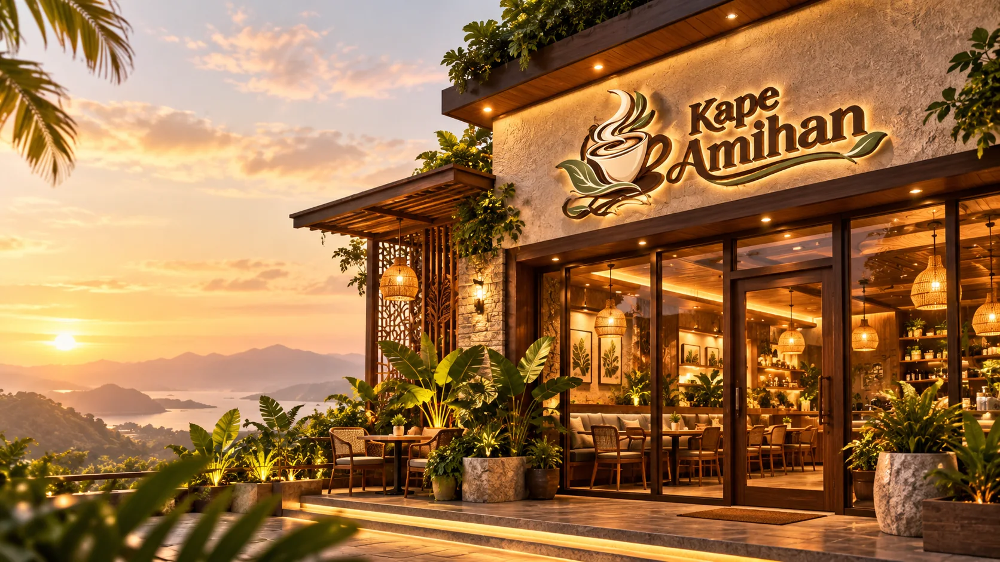
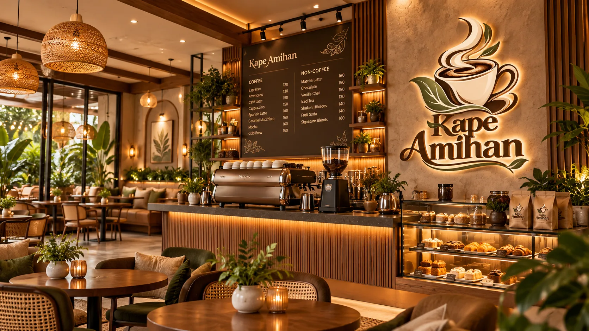
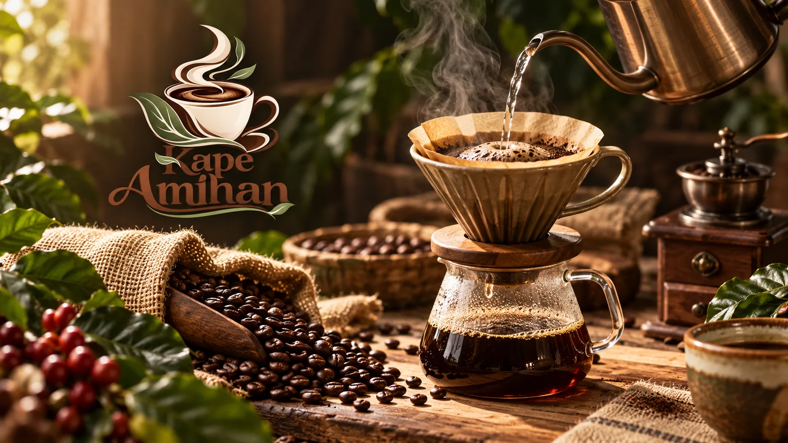
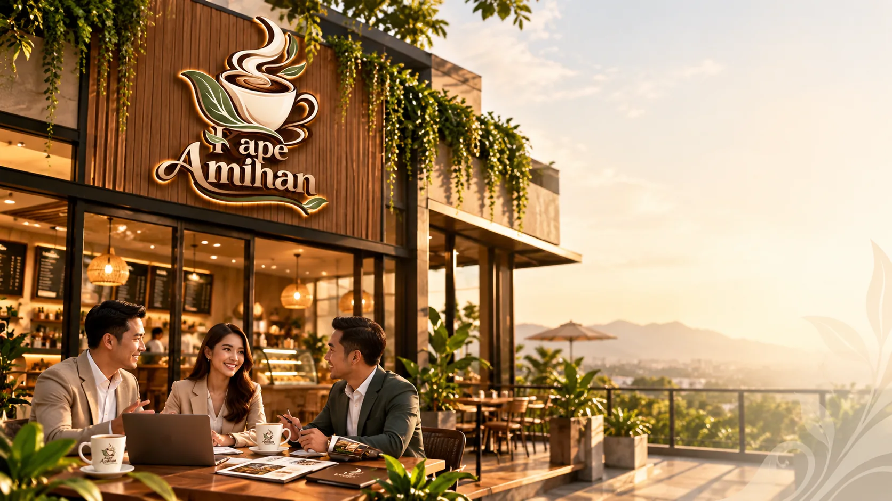

01 / SIPCRAFTED TO COMFORT
Signature Coffee & Drinks
Rich espresso, creamy favorites, and cool refreshments for any kind of day.
Ask about our menu
A LITTLE CUP OF HOME
Good coffee. Gentle moments. A cozy place to slow down, catch up, and feel right at home.

WELCOME TO KAPE AMIHAN
Inspired by the warmth of Filipino hospitality and the calm of the amihan breeze, we created a café where every visit feels like coming home.
Whether it's your first sip of the day, a conversation with friends, or a quiet moment to yourself, there's always a seat waiting for you.

MORE THAN JUST COFFEE
It's the aroma that welcomes you, the care poured into every brew, and the people who make a simple coffee break feel special.
Take your time. Stay for the conversation. Let the day unfold, one sip at a time.
A glimpse insideLIFE AT KAPE AMIHAN
Warm spaces, lovely little details, and the kind of atmosphere you'll want to return to.
LET'S GROW TOGETHER
Love coffee and the connections it creates? Explore the opportunity to build something meaningful with the Kape Amihan café concept.
Concept website only. Franchise terms, availability, and contact details are placeholders until confirmed by the business owner.

LET'S BUILD SOMETHINGSAY HELLO
Have a question, a partnership idea, or just want to say hi? We'd love to hear from you.